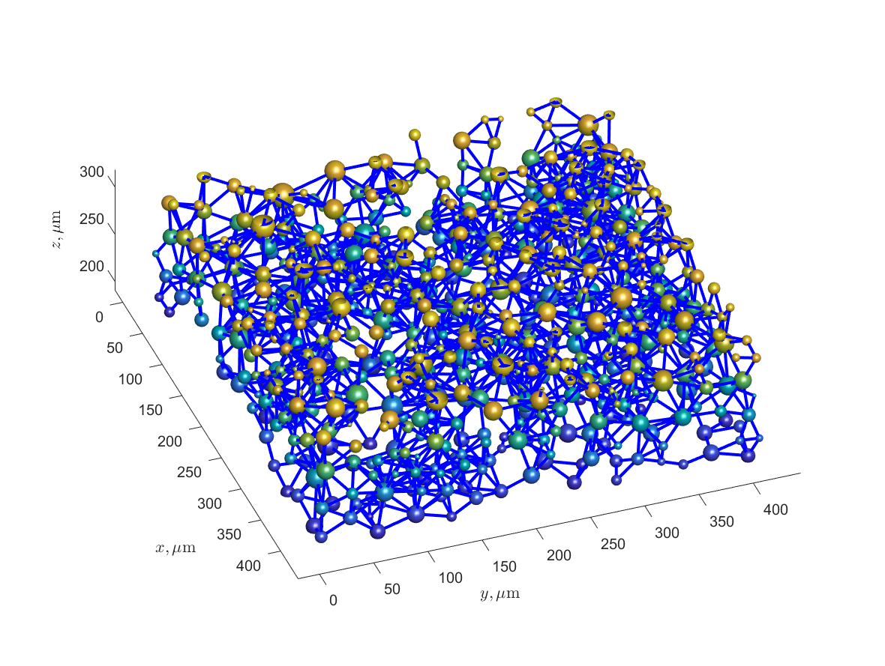

A Method for Random Packing of Spheres with Application to Bonding Modeling in Powder Bed 3D Printing Process. A Matlab-based computational procedure is proposed to fill a given volume with spheres whose radii are randomly picked from any specified probability distribution supported by Matlab. A sample application to the numerical mod-eling of bond formation between particles heated by a laser beam in powder bed 3D printing.process is considered. The general program sequence and examples of. examples of a unit cube, a parallelepiped, and a con-cave domain between two hemispherical surfaces are presented.
Matlab-based code builds a Dem Element Method (DEM) model of the powder-bed 3D printing process. The goal for the program presented below was not to find the optimal packing, but rather a packing of unequal spheres which closely models a realistic packing of metal powder particles. Two related methods were developed, and are available to the user within the current Matlab package. One method randomly packs the edges of the unit brick, then the faces, and then the volume, which results in a unit brick with a non-symmetric spherical distribution.
Method 1 of volume-generation is employed to generate a parallelepiped of size m×n×p, where m, n and p are the numbers of unit bricks in x, y and z direction respectively. In Method 1, information about the spheres that are in contact with the unit brick’s faces is used to fill the desired volume by re-ectecting the brick symmetrically with respect to its faceplanes. This process is repeated until desired length is met, and then is repeated in the opposite direction.
The function Method1GenerateSpheresm uses the prescribed probability distribution to fill with spheres the parallelepiped V having physical dimensions in x, y and z directions. The distribution (2.2) has the mean value of the distribution around the sphere radii, given by the probability density function (PDF) The nth entry is the radius of the nth sphere. The distribution is the distribution of the Weibull distribution. Method 1: a typical program sequence and run examples.
For the current example, they choose random sphere parameters for powder bed 3D printing process with 316L stainless steel powder The Matlab script Example1A_Method1Generate_and_Plot.m listed in Appendix A below lists the main parameters for the run. The script calls the main volume filling function Method1generateSpheres.m, saves the data, and plots the resulting graphs. Figure 2 (a, c, e) shows the unit brick, its internal structure, and the histogram of actual particle sizes compared to the distribution (2.2)
(a) Example 1A: a unit cube with side length 15 ¯r filled with spheres. (c) Spheres in middle 1/3 of the cube, showing the internal structure of the sphere. (e)Actual sphere radius distribution in the obtained sample, compared to the given Weibull distribution (2.2) (b,d,f) Same plots Example 1B: a. unit cube. with side. length 30 ¯r.
Two rows (fthe unit cubes)joined to form the final domain V.8. The spheres are scaled down to 40% of their actual sizes to visualize connections. The connectivity graph for a horizontal slab subdomain of the unit cube of. (a)(b)urous(c),(c)iously) is the connectivity graph of the vertical slab subdominant of a unit cube. Figure 3 shows the connectivity of two rows to form a 2 × 1 row top view.
Computations were performed on Matlab 2021a, using a Dell workstation with two Xeon processors, 32 logical processors, and 128 GB memory. Computation times listed in Table 1 below depend on the dimensions size of the unit brick and the numbers of unit bricks BrickNumbers along the axes to form the total domain V. Each unit brick is non-cubical, with size lengths specified in BrickSideLengths. Figure 4 shows the resulting sphere and the spheres touching the sides corresponding to the maximal x-value and the total build of the domain V.
The unit brick with side lengths 15 ¯r × [1.2, 1.7, 1] filled with spheres using Method 1 with and Weibull distribution (2.2) Spheres tangent to the brick sides corresponding to the minimal and the maximal x.10. The total domain V: 4 × 4 × 2 unit bricks. (a)(b) (b)) (c)(c) (d) is the domain V.
Method 2 is implemented in Matlab, in the function named "Method2GenerateSpheres" Method 2 uses the same parameters as Method 1 to fill a sphere with random spheres. The sphere is filled with spheres whose radii follow a given probability distribution. Method 2: the main sphere fitting function uses any prescribed probability distribution, and then the domain constructed from unit bricks, as specified.m. All input and output parameters in the Method 2 function also coincide with those for Method 1.
Figure 5 shows the unit cube with spheres centered on faces and the z-boundaries of the total volume V. Table 2 contains run times for computations analogous to those performed for Method 1 and Table 1. They note the higher values for FaceGoal and BodyGoal than used in Method 1 examples. This is because for Method 2, centers of boundary spheres are located on the faces, which results in higher relative area and volume occupied by the spheres in the unit brick. Sample desktop computation times T numbers of spheres N in a unit cube for Example 2 with Weibull (2.2), (3.4)
(a) Example 2: a unit brick (cube) with side length 30 ¯r filled with spheres using Method 2 with Gamma.6, (3.6) (unit cube clipped to its size, showing the centers of the spheres on the faces). (b) Same with the full unit cube is shown in a larger domain. (c) The probability function of the theoretical Gamma.uristic.distribution (3) vs. the histogram of actual particle sizes in the unit cube.
A special sphere generating function Example3GenerateSpheres.m has been created for this particular example. The input and output parameters for this function are outlined below. The parameters are used to create a sphere placing routine. A script Example3A_Cube_Hemisph_Generate_and_Plot.m (Appendix C) uses the sphere placing function with the following parameters: NSpheres: The total number of random spheres placed into the domain V. In the first run, they use the Weibull distribution (2.2), (2) to fill a domain with side length (std_length)
A script based on Example3A_Brick_Hemisph_Generate_and_Plot calls the sphere placing routine with different domain and computation parameters, as follows. The resulting spherical arrangement is shown in Figure 6 (a) Figure 6 shows the resulting sphere size distribution histogram (Fig. 6 (d) shows a good agreement with the given probability density function. This computation took almost fthe minutes to complete in the workstation configuration (144 minutes)
(a) Example 3A: a unit cube with side length (4.9) minus two equal hemispheres, filled with random sphericalspheres and Weibull distribution (2.2) (b) example 3B: a similar computation with a similar domain minus a non-cubic domain. (c) The computational domain and parent sphere parents for Example 3B. (d) Actual sphere radius distribution in Example 3C: (2)
Method 2 to model heat-based bonding in the additive manufactur-centricing process that uses a metal powder bed and a guided laser beam to heat the spherical particles and thus form bonds between them. Particle size distribution for 316L (2.2) steel powder is approximated by the Weibull distribution (2) The heat from laser into the ith spherical particle is given by the heat transfer coefficient, and TR is the temperature of the surrounding air.
A laser path was chosen to simulate the print of a small square in the middle of the domain by building thermallyinduced connections between the particles. Figure 8 depicts particles that were bonded in the result of the simulated print process and the top view of the bond graph. The computation took around five minutes, yielding the domain of size ∼ 2545 × 2545 x 50.89 µm, with the average particle radius 14.14 µm (Figure 7 (a))
A simulated print of a square (size in µm) Particles bonded during the simulated print (b) Bonds were formed between particles. The print domain was the size of the printing domain. The laser beampath was the first pass of the laser. The temperature scale in Kelvins was the temperature scale of the print. The simulated print was the result of a final pass of a laser beam. The printing domain is the domain of the printed domain and the temperature of the beam is the size in kmm.
The current manuscript describes a Matlab implementation of a geometry-based filling of a three-dimensional domain with spheres whose radii are randomly distributed according to a given prob-theoretical distribution. The two methods are implemented as two freely interchangeable Matlab functions Method1GenerateSpheres.m (Method 1) and Method 2 (Section 2) Method 2 uses one or more copies of a standard “unit brick” formed with user-prescribed sizes. The second method places centers of the random spheres on the faces, and multiplies unit bricks to tile the total volume by simple copying.